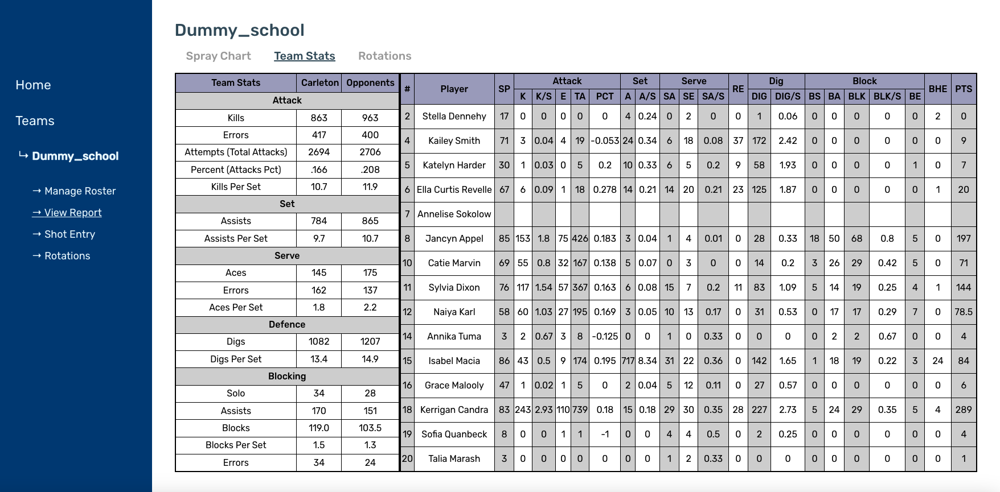

The scouting report page is where we visualize our data for each team. There are three separate tabs in this page:
- - Spray Chart
- - Team Stats
- - Rotations
Spray Chart
The Spray Chart tab shows the shots / serves of each players on the roster. It also has the note section to add comments on each player.

Team Stats
All the contents on this page are retrieved from the spreadsheet, which saves the scraped data from NCAA website. The table on the left side contains the overall team statistics on each categories (Attack / Set / Serve / Defense / Blocking). The table on the right side divides the data by each player, presenting individual statistics.
Rotations
The Rotations tab renders all the saved rotations and the comments for each rotation. Each rotation contains the rotation squad, rotation chart, strategy notes, and other notes sections. Each dot/line on the chart is marked by player number and distinctive color. If we want to make an instant change, we can redirect to the Rotation Entry by clicking the button on the top-right or the side navigation.